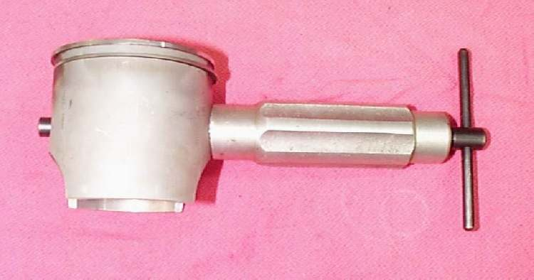

The piston pin (gudgeon pin, wrist pin) is the short steel rod that joins the piston to the small end of the connecting rod. A circlip in a groove at each end of the pin holds it in place. Two-strokes also have a needle bearing for the pin.
What it does
The pin lets the piston tilt slightly as the connecting rod swings. The circlips stop the pin from sliding sideways and hitting the cylinder wall. A circlip that fails lets the pin score the bore.
Signs it is worn or failing
- A tapping from the cylinder that does not match piston slap.
- A scored cylinder wall on one side, from a pin that has moved.
- Play at the small end when the piston is rocked on the rod with the cylinder off.
- A blued or pitted pin or a worn two-stroke pin bearing.
When to replace it
Replace the circlips every time they are removed. Replace the pin and any pin bearing when worn or when the piston is changed, as the pin is cheap compared with the damage a failure causes.
What to match when buying
- Match the pin diameter and length to the piston. Pistons with the same bore can have different pins.
- Circlips are not interchangeable. Wire, flat and other types exist. Use the type the piston maker lists.
- Buy a piston kit when possible: it includes the pin, circlips and rings. See Piston.
Fitting notes
- Remove one circlip with a pick and push the pin out with a screwdriver, or use a wrist pin puller if it is tight. Do not hammer it against the rod.
- Stuff a clean rag into the crankcase opening so a circlip cannot fall in.
- Seat each clip fully in its groove with the open end away from the slot. See Assess the top end and Inspect a piston.